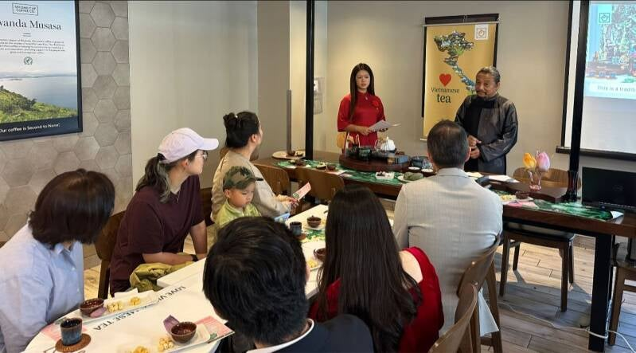

CVCEC meets Vietnamese tea artisan Nguyen Ngoc Tuan in Toronto
TORONTO, Feb. 20, 2026 — The Canada Vietnam Cultural & Educational Council (CVCEC) met traditional Vietnamese tea artisan Nguyen Ngoc Tuan in Toronto last summer for a conversation about tea, culture and identity in the Vietnamese diaspora.
Tuan, who describes himself as a “wanderer,” has spent more than 30 years promoting Vietnamese tea culture. His work has taken him from Hanoi to Ta Xua and Lung Phin in northern Vietnam, to southern Vietnam and eventually to North America.
Seated at a traditional tea table with clay teapots, accompanied by the dan nguyet, or moon lute, Tuan spoke about more than brewing techniques. He described tea as a practice of patience, stillness, connection and reflection.
One question continues to guide his work: “Why is Vietnamese tea so exceptional, yet the world has not fully recognized its true value?”
For Vietnamese communities abroad, CVCEC said, tea is a reminder of home and a way to keep cultural traditions alive across generations.
CVCEC thanked Tuan for the conversation and invited people in Canada to follow its upcoming cultural programs.

About CVCEC
The Canada Vietnam Cultural & Educational Council (CVCEC) is a federally incorporated not-for-profit organization based in Toronto. It offers Vietnamese language and culture classes for children, helps newcomer and international students settle into Canadian schools and connects education communities in Canada and Vietnam. More information is available at cvcec.org.
-30-
Media contact
Phan Thi Quynh Trang, founder and president
Canada Vietnam Cultural & Educational Council
contact@cvcec.org